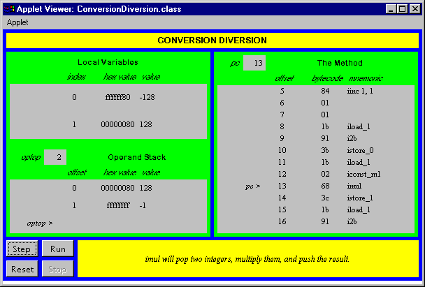

This chapter describes the instructions that convert values from one primitive type to another inside the Java Virtual Machine. It also looks at some of the idiosyncrasies of type conversion that arise from the virtual machine's limited support of byte s, short s, and char s.
Accompanying this chapter on the CD-ROM is an applet that interactively illustrates the material presented in the chapter. The applet, named Conversion Diversion, simulates the Java Virtual Machine executing a method that performs type conversion. At the end of this chapter, you will find a description of this applet and the bytecodes it executes.
The Conversion Opcodes
The Java Virtual Machine has many opcodes that convert from one primitive type to another. No operands follow the conversion opcodes in the bytecode stream. The value to convert is taken from the top of the stack. The Java Virtual Machine pops the value at the top of the stack, converts it, and pushes the result back onto the stack. Opcodes that convert between int, long, float, and double are shown in Table 11-1. There is an opcode for each possible from-to combination of these four types:
Table 11-1. Converting int s, long s, float s, and double s
| Opcode | Operand(s) | Description |
i2l | (none) | converts int to long |
i2f | (none) | converts int to float |
i2d | (none) | converts int to double |
l2i | (none) | converts long to int |
l2f | (none) | converts long to float |
l2d | (none) | converts long to double |
f2i | (none) | converts float to int |
f2l | (none) | converts float to long |
f2d | (none) | converts float to double |
d2i | (none) | converts double to int |
d2l | (none) | converts double to long |
d2f | (none) | converts double to float |
Opcodes that convert from an int to a type smaller than int are shown in Table 11-2. These opcodes pop one int off the operand stack, convert it to an int value that fits into a byte, short, or char, and push the resulting int back onto the operand stack. The i2b instruction truncates the popped int value to a byte, then sign-extends back out to an int. The i2s instruction truncates the popped int value to a short, then sign-extends back out to an int. The i2c instruction truncates the popped int value to a char, then zero-extends back out to an int.
Table 11-2. Converting int s, byte s, chars, and short s.
| Opcode | Operand(s) | Description |
i2b | (none) | converts int to byte |
i2c | (none) | converts int to char |
i2s | (none) | converts int to short |
No opcodes exist that convert directly from a long, float, or double to the types smaller than int. Therefore converting from a float to a byte, for example, requires two steps. First the float must be converted to an int with f2i, then the resulting int can be converted to a byte with i2b.
Although opcodes exist that convert an int to primitive types smaller than int ( byte, short, and char ), no opcodes exist that convert in the opposite direction. This is because any byte s, short s, or char s are effectively converted to int before being pushed onto the stack. The instructions that retrieve byte, short, and char values from arrays or objects on the heap and push them onto the stack convert the values to int. These instructions are described in Chapter 15, "Objects and Arrays."
Arithmetic operations upon byte s, short s, and char s are done by first converting the values to int, performing the arithmetic operations on the int s, and being happy with an int result. This means that if you add 2 byte s you get an int, and if you want a byte result you must explicitly convert the int result back to a byte. For example, the following code won't compile:
begin// On the CD-ROM in file opcodes/ex1/BadArithmetic.javaclass BadArithmetic {
static byte addOneAndOne() {
byte a = 1;
byte b = 1;
byte c = a + b;
return c;
}
}
end
When presented with the above code, javac objects with the following remark:
beginBadArithmetic.java(7): Incompatible type for declaration. Explicitcast needed to convert int to byte.
byte c = a + b;
^
end
To remedy the situation, the you must explicitly convert the int result of the addition of a + b back to a byte, as in the following code:
begin// On the CD-ROM in file opcodes/ex1/GoodArithmetic.javaclass GoodArithmetic {
static byte addOneAndOne() {
byte a = 1;
byte b = 1;
byte c = (byte) (a + b);
return c;
}
}
end
This makes javac so happy it drops a GoodArithmetic.class file, which contains the following bytecode sequence for the addOneAndOne() method:
begin0 iconst_1 // Push int constant 1.1 istore_0 // Pop into local variable 0, which is a: byte a = 1;
2 iconst_1 // Push int constant 1 again.
3 istore_1 // Pop into local variable 1, which is b: byte b = 1;
4 iload_0 // Push a (a is already stored as an int in local
// variable 0).
5 iload_1 // Push b (b is already stored as an int in local
// variable 1).
6 iadd // Perform addition. Top of stack is
// now (a + b), an int.
7 i2b // Convert int result to byte (result still
// occupies 32 bits).
8 istore_2 // Pop into local variable 3, which is
// byte c: byte c = (byte) (a + b);
9 iload_2 // Push the value of c so it can be returned.
10 ireturn // Proudly return the result of the addition: return c;
end
Conversion Diversion: A Simulation
The Conversion Diversion applet, shown in Figure 11-1, demonstrates a Java Virtual Machine executing a sequence of bytecodes. The applet is embedded in a web page on the CD-ROM in file applets/ConversionDiversion.html. The bytecode sequence in the simulation was generated by javac for the Convert() method of the class shown below:
begin// On CD-ROM in file opcodes/ex1/Diversion.javaclass Diversion {
static void Convert() {
byte imByte = 0;
int imInt = 125;
for (;;) {
++imInt;
imByte = (byte) imInt;
imInt *= -1;
imByte = (byte) imInt;
imInt *= -1;
}
}
}
end
The bytecodes generated by javac for Convert() are shown below:
begin0 iconst_0 // Push int constant 0.1 istore_0 // Pop to local variable 0, which is
// imByte: byte imByte = 0;
2 bipush 125 // Expand byte constant 125 to int and push.
4 istore_1 // Pop to local variable 1, which
// is imInt: int imInt = 125;
5 iinc 1 1 // Increment local variable 1 (imInt) by 1: ++imInt;
8 iload_1 // Push local variable 1 (imInt).
9 i2b // Truncate and sign extend top of stack so it
// has a valid byte value.
10 istore_0 // Pop to local variable 0 (imByte):
// imByte = (byte) imInt;
11 iload_1 // Push local variable 1 (imInt) again.
12 iconst_m1 // Push integer -1.
13 imul // Pop top two ints, multiply, push result.
14 istore_1 // Pop result of multiply to local variable 1 (imInt):
// imInt *= -1;
15 iload_1 // Push local variable 1 (imInt).
16 i2b // Truncate and sign extend top of stack so it has
// a valid byte value.
17 istore_0 // Pop to local variable 0 (imByte):
// imByte = (byte) imInt;
18 iload_1 // Push local variable 1 (imInt) again.
19 iconst_m1 // Push integer -1.
20 imul // Pop top two ints, multiply, push result.
21 istore_1 // Pop result of multiply to local variable 1 (imInt):
// imInt *= -1;
22 goto 5 // Jump back to the iinc instruction: for (;;) {}
end
The Convert() method demonstrates the manner in which the Java Virtual Machine converts from int to byte. imInt starts out as 125. Each pass through the while loop, it is incremented and converted to a byte. Then it is multiplied by -1 and again converted to a byte. The simulation quickly shows what happens at the edges of the valid range for the byte type.
The maximum value for a byte is 127. The minimum value is -128. Values of type int that are within this range convert directly to byte. As soon as the int gets beyond the valid range for byte, however, things get interesting.
The Java Virtual Machine converts an int to a byte by truncating and sign extending. The highest order bit, the "sign bit," of long s, int s, short s, and byte s indicate whether or not the integer value is positive or negative. If the sign bit is zero, the value is positive. If the sign bit is one, the value is negative. Bit 7 of a byte value is its sign bit. To convert an int to a byte, bit 7 of the int is copied to bits 8 through 31. This produces an int that has the same numerical value that the int 's lowest order byte would have if it were interpreted as a byte type. After the truncation and sign extension, the int will contain a valid byte value.
The simulation applet shows what happens when an int that is just beyond the valid range for byte types gets converted to a byte. For example, when the imInt variable has a value of 128 (0x00000080) and is converted to byte, the resulting byte value is -128 (0xffffff80). Later, when the imInt variable has a value of -129 (0xffffff7f) and is converted to byte, the resulting byte value is 127 (0x0000007f).
To drive the Conversion Diversion simulation, use the Step, Reset, Run, and Stop buttons. Each time you press the Step button, the simulator will execute the instruction pointed to by the pc register. If you press the Run button, the simulation will continue with no further coaxing on your part until you press the Stop button. To start the simulation over, press the Reset button. For each step of the simulation, a panel at the bottom of the applet contains an explanation of what the next instruction will do. Happy clicking.

The CD-ROM contains the source code examples from this chapter in the opcodes directory. The Conversion Diversion applet is contained in a web page on the CD-ROM in file applets/ConversionDiversion.html. The source code for this applet is found alongside its class files, in the applets/JVMSimulators and applets/JVMSimulators/COM/artima/jvmsim directories.
For more information about the material presented in this chapter, visit the resources page: http://www.artima.com/insidejvm/resources.